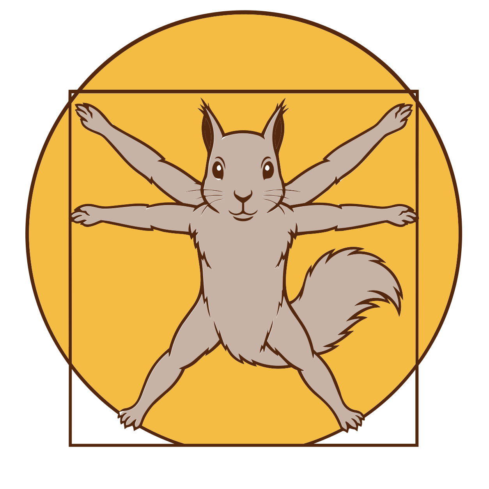

I didn’t make a brand book first. I started building the site and the system came together while I was already using it. Color choices, type swaps, glyphs. All of it got added in working code while I was shipping other projects through the same pages.
This page does both jobs at once. The reference content (swatches, type, glyphs) is below. The editorial framing is mixed in along the way. The website is the brand guide, so every page on sqrrlbrain.com is already running this same system — this guide is just the readme for what you’re looking at anyway.
Color
Brown ink on cream paper. The opposite of the white-and-grey-and-one-loud-color thing most studio sites do now. I wanted it to feel like print I’d actually make, not a tech company’s marketing site. Vermilion is the consistent accent. Warm-yellow got added recently as a tertiary, used in tasteful spots only. The brown family carries everything else — body type, secondary text, footer chrome.
Typography
Three families plus the logo face. Lora for editorial italic moves and H1s. DM Sans for body text. DM Mono for anything that should feel built rather than written.
Lora · Serif · Display + italic emphasis
Selected work, structural thinking.
Used for H1s and italic phrases that get the vermilion treatment. Italic em + vermilion fill is the strongest emphasis on the site so I don’t use it often.
DM Sans · Sans · Body text
Body copy. Light weight so it disappears into reading. The site is text-heavy on purpose so the sans has to stay out of the way.
DM Mono · Mono · Eyebrows + metadata
2026-05-06 · Brand identity · Self-as-client
Letter-spaced uppercase for eyebrows, dates, file paths, hex codes, tag chips. Anywhere the page needs a technical feel under the editorial top layer.
Custard Condensed · Display · Logo only
The wordmark is set in Custard Condensed. I don’t use it anywhere else — keeping it reserved to the logo means the lockup stays recognizable and doesn’t get diluted into headings or body type.
Brand glyphs
Two custom marks I drew for the brand. One structural, one rare. Together they let the brand have personality without pressing on every page.
Acorn The brand glyph. Leaning silhouette with a scalloped cap. I drew it at 11° off vertical so it reads like a found acorn, not a stamped icon. Inherits currentColor so it picks up whatever’s around it. Default is vermilion.
Used as An inline period after italic phrases — "asked" on the notes index, "dieline up" on about, "worth keeping" on the homepage, "dieline" on the 404. Sized .3em of the surrounding type, baseline-aligned. The lean of the acorn matches the italic em’s lean so they read together. Also used as a centered end-of-post mark at the bottom of notes essays.
Don’t Not as a list bullet. Not as a navigation icon. Not as a wallpaper pattern. The mark works because it’s rare; once it’s everywhere, it’s nothing.

Vitruvian Squirrel Vitruvian Man with a squirrel in it. The picture says it. The words don’t have to. Warm-yellow disk inscribed in the brown circle and square — same medallion construction as the original Vitruvian. I drew it for moments where the studio’s cross-domain habit itself is the subject. Copy never names DaVinci out loud; once you say it, the joke is dead.
Used as The 404 page centerpiece. Will show up again on essay headers about polymath-style work, or maybe on a printed deliverable. Not as a regular brand watermark.
Don’t Not as a hero on regular pages. Not as a footer flourish. Not as a watermark on every page. Same rule as the acorn — once it’s everywhere it stops working.
Voice
Plain, direct, technical when the work is technical. I describe what got built and why. No "we believe," no "we’re passionate about," no "innovative solutions." Personality shows up in the visual choices (the acorn period, the squirrel) and in italic vermilion phrases — not in performative writing.
Do
Plain, specific language. Name the actual constraint, the actual material, the actual decision the project came down to. Readers can follow technical detail; don’t dumb it down. When the work spans multiple domains, name the domains. Don’t claim polymathy.
Don’t
No AI-template phrases. No fabricated work or invented client brands to fill visual gaps. No naming DaVinci. No posing. The edge is 25 years of real production craft — padding it with concept fluff would only dilute that.
System in practice
Every page on sqrrlbrain.com runs this system. Below: eight places to see different content shapes — long-form essay, structural case study, hero block, 404 easter egg.
Where the system stands now: brown ink on cream paper, vermilion as the consistent accent, warm-yellow as a recent tertiary, an acorn glyph that punctuates italic phrases, and a Vitruvian Squirrel for the rare moment when the cross-domain habit itself is the subject. All of it lives in the working code of this site — including the page you’re looking at.
Brand identity, system design, logos, and code: Ronny Goodrich · Wordmark typeface: Custard Condensed (third-party, lockup constructed in-house) · Body type: Lora + DM Sans + DM Mono (Google Fonts) · Custom marks: Acorn glyph and Vitruvian Squirrel illustrated by Ronny Goodrich